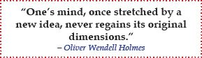
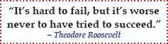
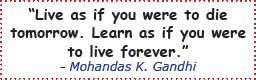
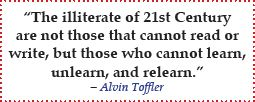
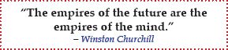
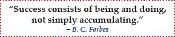

Congratulations; you’ve come a long way!
By now, you’ve realized that everyone has the learning capacity to get As. You’ve also seen how CLM completely transforms your learning from trivial to meaningful. This learning transformation happens through a five-phase process in which you meaningfully organize and connect key concepts through a visual map by critically thinking and asking key questions.

For success to come to you, both in college and in life, you must want it and take steps to pursue it. Your education and your success are your responsibility, and both require that you become a self-directed, motivated, lifelong learner.
It’s very simple: all the certificates, diplomas, and tools in the world won’t make one bit of difference unless you take responsibility and put what you learn into practice. Ultimately, you are responsible for your learning performance, learning development, strengthening of your learning skills, and realizing success in college, career, and life.
Let the principles you’ve learned in this book be your guide, and you’ll definitely become more successful in college and in life. It’s not essential that you follow the entire book word for word; rather, take the parts that resonate with you and make them your own. Have fun along the way, and don’t look for an easy way out because shortcuts won’t get you very far.

You can be successful, but it’s completely up to you. Accept and value being in control of your learning, and put into practice the strategies that you just learned. You’ll see immediate and long-term results.
You’re at a point where this book ends and you begin. All paths are wide open to you.
Efficient and effective learning is within reach as soon as you put into practice what you learned in this book. Changing old ways and adopting new methods does not happen overnight. It happens with intention, practice, and persistence. So make the committment to put CLM into use immediately and keep them in use, while constantly improving, until they become second nature. Once that happens, success is not far away.

Learning does not end in college. In fact, research shows that your brain is capable of learning throughout life. The brain literally restructures and reorganizes neural pathways via new inputs and experiences throughout our lives. This process is called neuroplasticity.16
Learning never ends. This means you have to embrace becoming a lifelong learner, which requires:

Ultimately, success comes to those who fully embrace and engage in lifelong learning, those who have applied the concepts of knowledge integration and critical thinking to their lives by drawing on real-world problem solving and interaction with others. This involves an adjustment in mindset. It involves making learning a part of your lifestyle.

Read more about lifelong learning in the Bonus Chapter.
Through the years, I’ve asked quite a few parents, grandparents, and great-grandparents about the most important lesson(s) they have learned from their lives. After all, they’ve been through what we’re going through, in their own way, so they should have many useful experience-based lessons to share. As expected, they offered lots of excellent advice.

Here are two of those life lessons that I have taken to heart and live by: